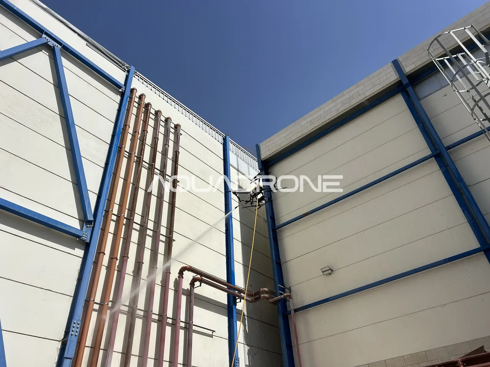

09/09/26
ניקוי חזיתות מפעלים ברחפן: איך ניקוי שומר על המבנה מפני בלאי וסדקים
ניקוי חזיתות מפעלים נתפס לרוב כעניין של מראה: מפעל נקי משדר סדר, ומחסן מטופל נראה טוב יותר ללקוחות ולעובדים. אבל במבני תעשייה יש לניקוי המעטפת החיצונית גם תפקיד תחזוקתי. אבק תעשייתי, פיח, שאריות כימיות, מלחים ולחות לא רק מלכלכים את הקירות. הם נשארים על החיפוי, על הגג ועל הפרופילים, סופגים לחות ויוצרים סביבה שמאיצה בלאי של חומרים. במאמר הזה נסביר מה מצטבר על חזיתות של מפעלים, מחסנים ומרכזים לוגיסטיים, איך ההצטברות הזו קשורה לבלאי מבנה ולסדקים, למה עובש ופיח קשים יותר להסרה ככל שמחכים, ואיך מבצעים ניקוי ברחפן בלי פיגומים ובלי לעצור את הפעילות.
חשוב לומר כבר בהתחלה: ניקוי לבדו לא מונע סדקים. סדקים נוצרים מסיבות רבות, ביניהן תנועות של המבנה, שינויי טמפרטורה, עומסים ואיכות הביצוע. מה שניקוי כן עושה הוא להסיר חלק מהגורמים שמאיצים בלאי, ולחשוף את פני השטח כך שאפשר לראות בעיות בזמן.
ניקוי חזיתות מפעלים: מה מצטבר על המעטפת של מבנה תעשייה
המעטפת של מבנה תעשייה חשופה לסביבה אחרת מזו של בניין מגורים. בהתאם לסוג המפעל ולמיקום שלו, על הקירות והגג מצטברים בדרך כלל:
- אבק תעשייתי ואבק דרכים מתנועת משאיות, מלגזות ומעבודות באזור.
- פיח ושאריות פליטה מארובות, מגנרטורים, מתנועת רכבים ומתהליכי ייצור.
- שאריות כימיות שמגיעות עם האוויר מתהליכי ייצור ונדבקות לחיפוי.
- מלחים, במיוחד באזורי תעשייה קרובים לים.
- לחות ממושכת בקירות מוצלים, מאחורי מתקנים ובפינות שהשמש לא מגיעה אליהן.
- לשלשת ציפורים על כרכובים, מרזבים ומתקנים על הגג. על זה כתבנו בהרחבה במאמר על הסרת עובש וכתמי יונים.
הבעיה היא לא רק השכבה עצמה, אלא מה שהיא עושה לאורך זמן. גשם שוטף חלק מהלכלוך מהמשטחים החשופים, אבל באזורים מוגנים, מתחת לכרכובים, מאחורי צנרת ובפינות, ההצטברות נשארת ומתעבה.
איך לכלוך מאיץ בלאי של חומרים
הקשר בין לכלוך לבלאי עובר בעיקר דרך לחות. שכבת אבק ומשקעים על משטח מתכת מחזיקה לחות לאורך זמן ומגדילה את המוליכות שלה, וכך נוצרים מוקדים מקומיים של קורוזיה. כך מסבירה איגוד המגלוונים האמריקאי (AGA), שמציין גם שתרכובות גופרית מפליטות תעשייתיות וכלורידים ממלחים הם בין הגורמים הסביבתיים המשפיעים ביותר על קצב הקורוזיה, ושסביבה תעשייתית מסווגת אצלם כקורוזיבית יותר מסביבה כפרית. לפי אותו מקור, משטחים שהגשם שוטף נהנים משטיפה טבעית, ואילו משטחים מוגנים מגשם צוברים משקעים קורוזיביים לאורך זמן.
במבנים עם חיפוי פח, פאנלים מבודדים, פרופילי פלדה וקונסטרוקציה חשופה, כמו המבנה שבתמונה הראשית, זה רלוונטי במיוחד. ניקוי תקופתי מסיר את שכבת המשקעים שמחזיקה את הלחות ואת המלחים על פני השטח. הוא לא מתקן קורוזיה שכבר קיימת, אבל הוא מוריד את אחד הגורמים שמאיצים אותה.
גם בחזיתות אבן ובטון ההצטברות לא ניטרלית. המדריך של שירות הפארקים הלאומיים בארה"ב לניקוי בנייה מציין שאחת המטרות של ניקוי היא להאט בלאי על ידי הסרת חומרי לכלוך שעלולים להזיק לבנייה, ומתאר קרומי פיח וגבס שנוטים להיווצר דווקא באזורים שהגשם לא שוטף. על ניקוי אבן כתבנו בהרחבה במאמר על ניקוי חזיתות אבן.
עובש ופיח על מבני תעשייה: למה הם מחמירים עם הזמן
עובש וגידול אורגני מופיעים במקומות שבהם יש לחות, צל וזמן. קירות שפונים צפונה, קירות שמוצלים על ידי מבנים סמוכים, אזורים מאחורי מתקני מיזוג ופינות שבהן מים מטפטפים ממרזב הם המקומות הטיפוסיים. סקירה מדעית על בלאי ביולוגי של חומרי בנייה מסבירה שחזיתות רטובות ופחות שטופות שמש מתיישבות מהר יותר על ידי אורגניזמים, ושפטריות מפרישות חומצות ושולחות שלוחות לתוך פני החומר. לפי אותה סקירה, השילוב של חומצות ביולוגיות, מזהמים ובלייה יוצר סדקים ונקיקים בפני השטח של בטון ומגדיל את הנקבוביות.
פיח מגיע מפליטות: ארובות, גנרטורים, תנורים ותנועת משאיות. הוא שמנוני ודביק יותר מאבק רגיל, ולכן נדבק לחיפוי ומושך אליו עוד לכלוך. באזורים שהגשם לא מגיע אליהם הוא מצטבר לשכבה עבה.
הסיבה ששניהם קשים יותר להסרה ככל שמחכים דומה. עובש שמתבסס חודר לנקבוביות ולתפרים, ושכבה עבה של פיח ומשקעים מתקשה ונקשרת לפני השטח. המדריך של שירות הפארקים הלאומיים מציין שקרומים מסוימים יכולים להפוך לחלק מהאבן עצמה, עד שהסרתם עלולה לפגוע בפני השטח. ניקוי בשלב מוקדם, כשהשכבה עדיין דקה, דורש פחות חומר ופחות מאמץ ומשאיר פחות סימנים. על אותו עיקרון כתבנו במאמר על ניקוי כתמים בחזית לפני שהם מתקבעים.
ועוד נקודה: גם עובש וגם פיח מסתירים את מה שמתחתיהם. כתם כהה על הקיר יכול להסתיר סדק, רטיבות שמחלחלת או פרופיל שמתחיל להחליד.
סדקים ובלאי מבנה: למה ניקוי עוזר לגלות בעיות מוקדם
הסיבה החשובה אולי לנקות את המעטפת של מפעל היא שאחרי ניקוי רואים אותה. על קיר מלוכלך קשה להבחין בסדק שיער, בכתם חלודה שמתחיל ליד בורג, בחיבור בין פאנלים שנפתח או במקום שבו מים מחלחלים. אחרי ניקוי, אותם פרטים בולטים.
סדקים דקים שנשארים מלאים בלחות ובגידול אורגני עלולים להחמיר עם הזמן: הלחות נשארת בתוך הסדק, והאורגניזמים מרחיבים את הנקבוביות סביבו. ניקוי מסיר את הגידול ומאפשר לראות את הסדק, אבל לא סוגר אותו. התיקון עצמו הוא עבודה של איש מקצוע מתאים.
המדריך של שירות הפארקים הלאומיים מזכיר במפורש סקר מצב של הבנייה כאחת המטרות של ניקוי. בסוף כל עבודה אנחנו מעבירים דוח מסכם עם תמונות. כשאנחנו מבחינים במהלך הניקוי בסדק, בחלודה או בפגם אחר, אנחנו מתעדים אותו בדוח. כך מנהל האחזקה מקבל תיעוד ויכול להחליט מה לבדוק ומה לתקן. זה לא מחליף בדיקה הנדסית, אבל זה נותן נקודת התחלה מסודרת.
מה מנקים במבנה תעשייה: חזיתות, חיפויים, גגות, חלונות וסולארי
- חזיתות וחיפויים. פח, פאנלים מבודדים, בטון, אבן וחיפויי אלומיניום. כל משטח מקבל לחץ וחומר ניקוי מתאימים, ובמשטחים רגישים עובדים בלחץ נמוך.
- גגות. גגות פח וגגות שטוחים צוברים אבק, משקעים ולשלשת. פירטנו על כך במאמר על ניקוי גגות באמצעות רחפן.
- חלונות וזכוכית. בשטיפה הסופית אפשר להשתמש במים מטוהרים באוסמוזה הפוכה, כדי שלא יישארו סימני אבנית.
- פאנלים סולאריים על הגג. מחקר שפורסם במאגר של משרד האנרגיה האמריקאי מתאר איך הצטברות אבק ולכלוך על פאנלים מפחיתה את כמות האור שמגיעה לתאים, ולכן גם את התפוקה. ראו גם את המאמר שלנו על ניקוי פאנלים סולאריים ברחפן.
סקירה רחבה יותר של העבודה במבני תעשייה ותשתיות תמצאו במאמר על ניקוי מבני תעשייה ותשתיות באמצעות רחפן.
ניקוי חזיתות במפעל פעיל, בלי לעצור את העבודה
במפעל, כל שעה של השבתה עולה כסף. היתרון המרכזי של רחפן הוא שאין צורך בפיגומים, במנופים או בבמות הרמה שחוסמות דרכים, רמפות פריקה וחניות. הרחפן עובד מהאוויר, והצוות על הקרקע תופס שטח קטן. במבנים עם קונסטרוקציה, צנרת ומתקנים על הקיר הרחפן מגיע גם לאזורים שקשה להגיע אליהם בשיטות אחרות.
אפשר לתאם את העבודה גם אחרי שעות הפעילות, בסופי שבוע או לפי חלוקה לאזורים, כך שבכל שלב רק קטע קטן של המבנה מושפע. לפני העבודה אנחנו עוברים עם האחראי באתר על נקודות רגישות: פתחי אוורור, ציוד חשמלי חיצוני, אזורי אחסון פתוחים ואזורים שאסור להרטיב. אנחנו עובדים לפי הנחיות רשות התעופה האזרחית ולפי נהלי הבטיחות של האתר.
מה לא כלול בשירות
- ניקוי פנים, קווי ייצור ומכונות. השירות שלנו מתמקד במעטפת החיצונית בלבד.
- חיטוי תעשייתי. אנחנו מסירים לכלוך, פיח ועובש מפני השטח, אבל לא מבצעים חיטוי.
- הסרת שאריות בטון וצבע. הרחפן לא מסיר אותן. גירוד ידני הוא שירות נפרד.
- תיקוני סדקים וטיפולי הגנה. אנחנו מתעדים את מה שרואים, אבל התיקון נעשה על ידי בעלי מקצוע מתאימים.
פירוט של כל השירותים שלנו נמצא בעמוד השירותים שלנו, והמדריך המלא שלנו לניקוי חזיתות באמצעות רחפן מסביר את התהליך צעד אחר צעד.
שאלות נפוצות
האם ניקוי חזיתות מפעלים מונע סדקים?
לא לבדו. סדקים נוצרים מסיבות רבות, כמו תנועות של המבנה, שינויי טמפרטורה ועומסים. ניקוי מסיר משקעים, לחות כלואה וגידול אורגני שעלולים להאיץ בלאי, ובעיקר חושף את פני השטח כך שאפשר לגלות סדקים ופגמים בשלב מוקדם.
למה עובש ופיח קשים יותר להסרה ככל שמחכים?
עובש שמתבסס חודר לנקבוביות ולתפרים של החומר, ושכבה עבה של פיח ומשקעים מתקשה ונקשרת לפני השטח. ניקוי כשהשכבה עדיין דקה דורש פחות חומר ופחות מאמץ ומשאיר פחות סימנים. מדובר בניקוי של פני השטח ולא בחיטוי.
אפשר לנקות בזמן שהמפעל עובד?
כן. אין צורך בפיגומים או במנופים, והצוות על הקרקע תופס שטח קטן. אפשר גם לתאם עבודה אחרי שעות הפעילות או לפי אזורים, כדי שהפעילות תושפע כמה שפחות.
האם אתם מנקים גם את פנים המפעל או את קווי הייצור?
לא. השירות שלנו מתמקד במעטפת החיצונית: חזיתות, חיפויים, גגות, חלונות ופאנלים סולאריים. אנחנו לא מנקים פנים, קווי ייצור או מכונות, ולא מבצעים חיטוי.
מה מקבלים בסוף העבודה?
דוח מסכם עם תמונות. כשאנחנו מבחינים במהלך הניקוי בסדק, בחלודה או בפגם אחר, אנחנו מתעדים אותו בדוח, כדי שמנהל האחזקה יוכל להחליט מה לבדוק. הדוח לא מחליף בדיקה הנדסית.
האם הרחפן מסיר שאריות בטון או צבע?
לא. הרחפן מסיר לכלוך, אבק, פיח ועובש. שאריות בטון וצבע דורשות גירוד ידני, שהוא שירות נפרד.
רוצים לדעת מה אפשר לעשות במבנה שלכם? שלחו לנו סרטון קצר של החזיתות והגג, ונחזור אליכם עם הצעה מותאמת.